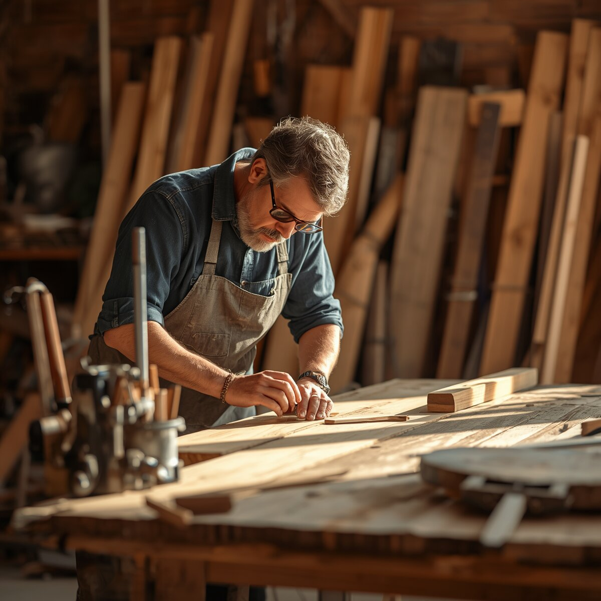

Våra tjänster
Vi tar hand om hela projektet - från planering och offert till färdigt resultat. Du har en fast kontaktperson hela vägen och vi samordnar elektriker, rörmokare och andra hantverkare åt dig.

-
Kök
Rivning, ny planlösning, montering av köksinredning, bänkskivor och golv.
Till köksrenovering -
Badrum
Helrenovering med certifierat tätskikt, kakel, klinker och våtrumsintyg.
Till badrumsrenovering -
Nybyggnation och tillbyggnad
Tillbyggnader, attefallshus, garage och nya hus - inklusive hjälp med bygglov.
Till nybyggnation -
Altaner och trädäck
Altaner, trädäck, pergolor, trappor och räcken anpassade efter din tomt.
Till altaner och trädäck
Så går det till
- Kontakt. Du hör av dig via vårt formulär eller ringer oss och berättar kort om ditt projekt.
- Kostnadsfritt hembesök. Vi kommer hem till dig, mäter upp och lyssnar på dina önskemål.
- Offert. Inom en vecka får du en skriftlig offert med fast pris och tidsplan.
- Arbetet utförs. Du har en fast kontaktperson och vi städar efter oss varje dag.
- Slutbesiktning. Vi går igenom resultatet tillsammans. Först när du är nöjd skickar vi fakturan.
ROT-avdrag
För de flesta av våra tjänster kan du få ROT-avdrag på arbetskostnaden. Vi drar av beloppet direkt på fakturan och sköter ansökan till Skatteverket, så du betalar bara din del. ROT-avdraget gäller inte nybyggnation, men vi hjälper dig att reda ut vad som gäller för just ditt projekt.
Vanliga frågor
Hur snart kan ni börja?
Oftast kan vi starta 4-8 veckor efter att du godkänt offerten. Mindre jobb kan ibland göras snabbare.
Måste jag vara hemma när ni arbetar?
Nej. Många kunder lämnar en nyckel till oss. Vi skickar en kort uppdatering i slutet av varje arbetsdag.
Vilket område arbetar ni i?
Vi arbetar i Göteborg med omnejd, bland annat Bollebygd, Borås, Sandared, Fritsla, Skene och Kinna.
Vad händer om något blir fel efteråt?
Vi lämnar 5 års garanti på utfört arbete. Hör av dig så kommer vi ut och åtgärdar felet utan kostnad.